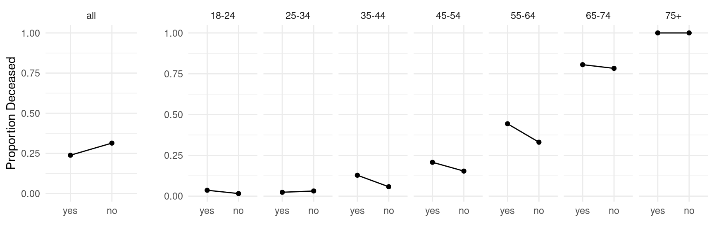
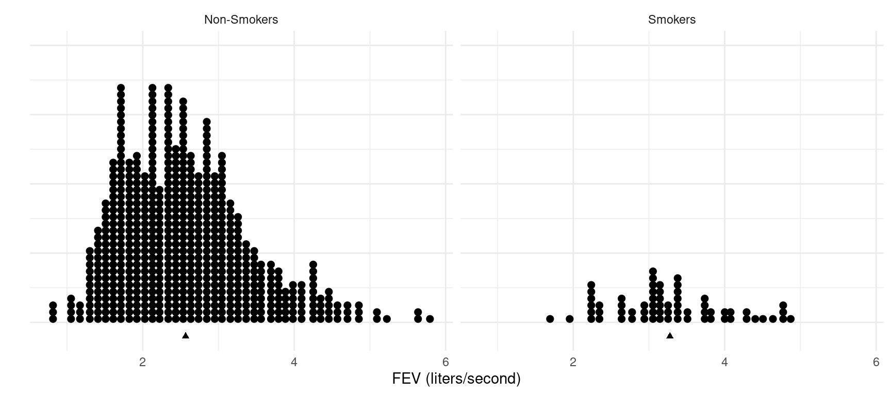
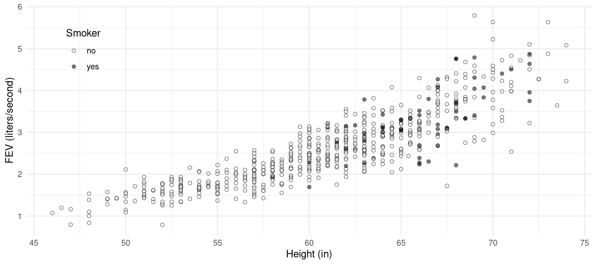

You can also download a PDF copy of this lecture.
Example: The following data are from an observational study that compared open surgical methods with percutaneous nephrolithotomy with respect to success of removing a kidney stone.1
| Treatment | success | failure | Total |
|---|---|---|---|
| open surgical method | 273 (0.78) | 77 (0.22) | 350 |
| percutaneous nephrolithotomy | 289 (0.83) | 61 (0.17) | 350 |
| Size | Treatment | success | failure | Total |
|---|---|---|---|---|
| large | open surgical method | 192 (0.73) | 71 (0.27) | 263 |
| large | percutaneous nephrolithotomy | 55 (0.69) | 25 (0.31) | 80 |
| small | open surgical method | 81 (0.93) | 6 (0.07) | 87 |
| small | percutaneous nephrolithotomy | 234 (0.87) | 36 (0.13) | 270 |
Why?
Simpson’s Paradox: A situation when the relationship between two variables “reverses” when conditioning upon a third confounding variable.
Example: The data shown below are from an investigation of the relationship between the defendant’s race and whether or not the death penalty was given in murder trials.| Defendant | yes | no | Total |
|---|---|---|---|
| white | 53 (0.11) | 430 (0.89) | 483 |
| black | 15 (0.08) | 176 (0.92) | 191 |
| White Victim | |||
| white | 53 (0.11) | 414 (0.89) | 467 |
| black | 11 (0.23) | 37 (0.77) | 48 |
| Black Victim | |||
| white | 0 (0) | 16 (1) | 16 |
| black | 4 (0.03) | 139 (0.97) | 143 |
Example: Consider data from a survey of women and an investigation of the relationship between smoking and mortality.

Berkson’s paradox is when an association between two variables is due (in part) to selection bias (i.e., that some units have a higher probability of being sampled than others).
Example: Suppose that an observational study of people from the general population does not reveal any relationship between diabetes and cholecystitis (an inflammation of the gallbladder).| Diabetes | yes | no | Total |
|---|---|---|---|
| yes | 100 (0.1) | 900 (0.9) | 1000 |
| no | 1900 (0.1) | 17100 (0.9) | 19000 |
| Total | 2000 | 2000 | 20000 |
| Diabetes | yes | no | Total |
|---|---|---|---|
| yes | 100 (0.1) | 900 (0.9) | 1000 |
| no | 1900 (0.48) | 2100 (0.52) | 4000 |
| Total | 2000 | 2000 | 5000 |
Example: A study published in the Journal of Internal Medicine of individuals aged 19 years or younger who received emergency medical care in Ontario, Canada, following an off‐road vehicle crash showed that those that were wearing a helmet were associated with a greater injury severity and necessity for more medical care than those not wearing a helmet.
| Helmet | yes | no | Total |
|---|---|---|---|
| yes | 945 (0.1) | 8917 (0.9) | 9862 |
| no | 1652 (0.07) | 23688 (0.93) | 25340 |
| Total | 2597 | 2597 | 35202 |
But individuals who did not receive emergency medical care (either because they were fine or because they died at the scene) are not included. What happens if we include them?
Suppose that there were 10000 cases where an individual was wearing a helmet but did not require emergency medical care, and 50 cases where an individual was not wearing a helmet but did not require emergency medical care.| Helmet | yes | no | Total |
|---|---|---|---|
| yes | 945 (0.05) | 18917 (0.95) | 19862 |
| no | 1652 (0.07) | 23738 (0.93) | 25390 |
| Total | 2597 | 2597 | 45252 |
The ecological fallacy is the misconception that an association at the group level implies a similar association at the individual level.
Example: Research in Europe in the 19th century showed that suicide was more common in regions that were predominantly Protestant in comparison to areas that were predominantly Catholic. Would we conclude that within any given area the suicide rate is higher among Protestant people than Catholic people?
Example: Hobbit villages with higher pipe weed consumption also tend to have higher rates of foot lice. Would we conclude that within a given village that foot lice is more common among individual Hobbits that smoke in comparison to those who do not?
A suppressor variable is a variable that, if not conditioned upon, will “suppress” (i.e., reduce in magnitude) the relationship between two variables.
Example: Consider a study of the relationship between participation in a Head Start program and academic success.| Head Start | yes | no | Total |
|---|---|---|---|
| no | 471 (0.47) | 533 (0.53) | 1004 |
| yes | 509 (0.51) | 487 (0.49) | 996 |
| SES | Head Start | yes | Total | total |
|---|---|---|---|---|
| high | no | 426 (0.5) | 422 (0.5) | 848 |
| high | yes | 101 (0.78) | 29 (0.22) | 130 |
| low | no | 45 (0.29) | 111 (0.71) | 156 |
| low | yes | 408 (0.47) | 458 (0.53) | 866 |
A spurious relationship is when the apparent association between two variables disappears when conditioning on a third variable.
Example: Consider data from an observational study of the relationship between smoking and forced expiratory volume (FEV) and children and adolescents.  Now suppose we examine the data but take into consideration height. 
Charig, C. R., Webb, D. R., Payne, S. R., & Wickham, J. E. A. (1986). Comparison of treatment of renal calculi by open surgery, percutaneous nephrolithotomy, and extracorporeal shockwave lithotripsy. British Medical Journal, 292, 879–882.↩︎